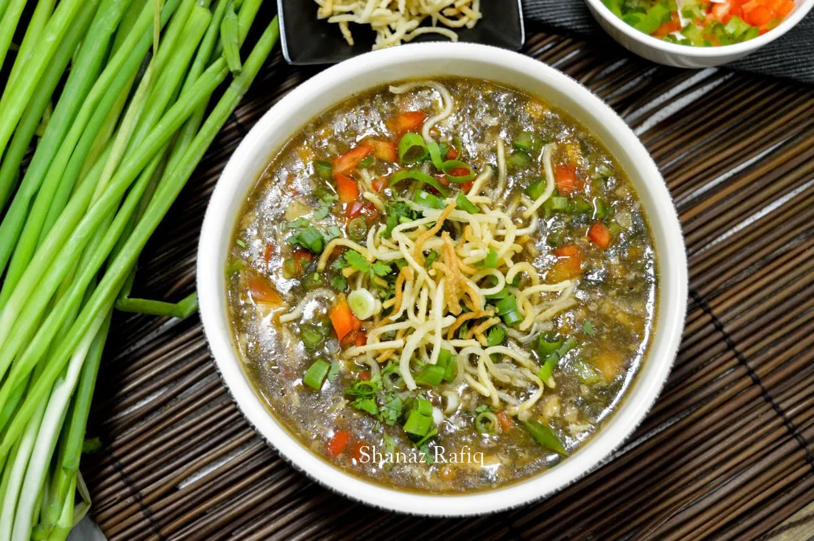

Specials

Smoky Hamburger
$8
Juicy, grilled beef patty with fresh toppings.

Honey Garlic Chicken
$15
Sweet and savory Honey Garlic Chicken features tender chicken glazed in a rich honey garlic sauce.

Manchow Soup
$15
Chicken Manchow Soup is a spicy, tangy, and flavorful soup with chicken and vegetables.

Spaghetti
$15
Spaghetti is a classic Italian pasta, often served with rich sauces, meatballs, and grated cheese.

Salmon
$15
Rich, flavorful fish with tender, flaky pink flesh.

Sandwich
$10
A sandwich layers ingredients between slices of bread, offering versatile combinations like meats, cheeses, veggies, and condiments.